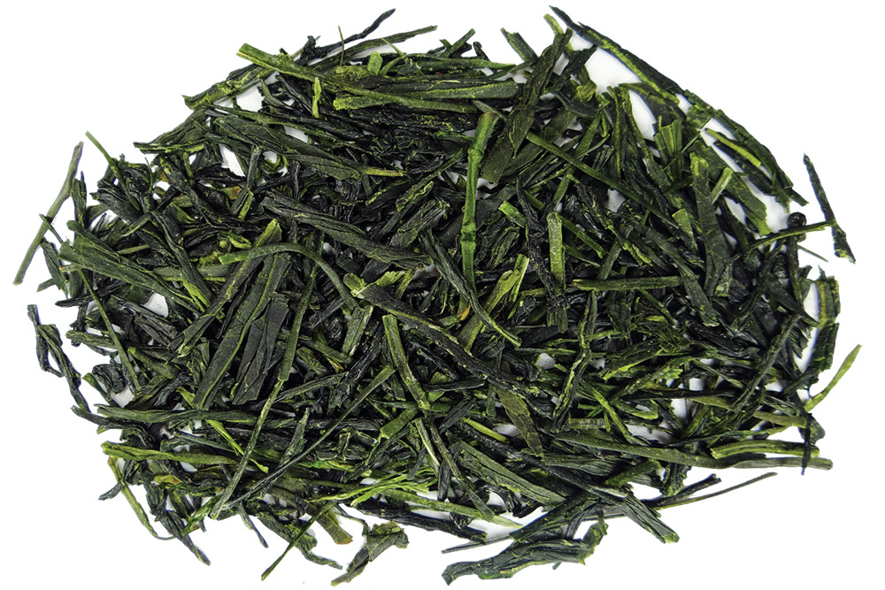

Green Tea
Green Tea is an Unoxidized tea. The tea farmers will pick the bud and the first leaf or two and set it out in the sun to dry. after this they are either panfried or steamed to stop oxidation. green teas have a very fresh and natural flavour. Green tea has the highest amount of caffeine compared to other teas. According to legend, green tea was first brewed in 2737 BC during the reign of Emperor Shennong.
